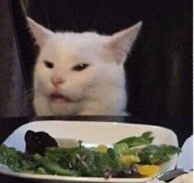

고양이 짤 성격 테스트

당신의 고양이는
"탕치개개개개개 고양이"
입니다
자발적인 아웃사이더에요. 분석하고 추리하는 거 진짜 좋아하고 생각도 많아요. 자기애가 넘쳐흐르고 마이웨이적인 성격이에요. 진지충, 팩폭러 같은 얘기를 많이 들어요. 게을러요. 무뚝뚝해요. 공감 능력이 좀 부족하지만 겉으로는 사회적인 모습을 보이기도 해요. 시끄러운 거도 아주 싫어해요.